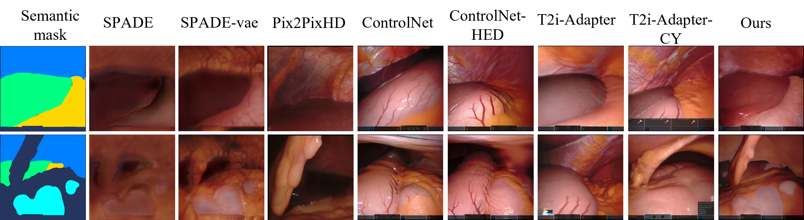

The generated images from CholecSeg8K dataset.

The generated images from HeiSurf dataset.

In computer-assisted surgery, automatically recognizing anatomical organs is crucial for understanding the surgical scene and providing intraoperative assistance. While machine learning models can identify such structures, their deployment is hindered by the need for labeled, diverse surgical datasets with anatomical annotations. Labeling multiple classes (i.e., organs) in a surgical scene is time-intensive, requiring medical experts. Although synthetically generated images can enhance segmentation performance, maintaining both organ structure and texture during generation is challenging. We introduce a multi-stage approach using diffusion models to generate multi-class surgical datasets with annotations. Our framework improves anatomy awareness by training organ specific models with an inpainting objective guided by binary segmentation masks. The organs are generated with an inference pipeline using pre-trained ControlNet to maintain the organ structure. The synthetic multi-class datasets are constructed through an image composition step, ensuring structural and textural consistency. This versatile approach allows the generation of multi-class datasets from real binary datasets and simulated surgical masks. We thoroughly evaluate the generated datasets on image quality and downstream segmentation, achieving a 15% improvement in segmentation scores when combined with real images.
@inproceedings{venkatesh2025data,
title={Data augmentation for surgical scene segmentation with anatomy-aware diffusion models},
author={Venkatesh, Danush Kumar and Rivoir, Dominik and Pfeiffer, Micha and Kolbinger, Fiona and Speidel, Stefanie},
booktitle={2025 IEEE/CVF Winter Conference on Applications of Computer Vision (WACV)},
pages={2280--2290},
year={2025},
organization={IEEE}
}